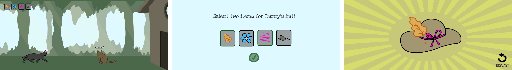

Kitty The Hat Makin' Cat
Showcasing an Interactive Process through a playful storyline
The game centers around Kitty, a clever cat, as she goes about her day in the neighborhood. I designed the interface to be simple, clear, and easy to navigate, making sure players could focus on the experience without getting lost in confusing menus or controls.
The goal was to create a seamless gameplay flow that would appeal to those who enjoy exploration and decision making, while maintaining a visually appealing and user-friendly design.
Role
Illustration
Application Programming
User Interface Design
Tools Used
Java
Processing
Figma
Adobe Photoshop
Team
Just me ⭐
Scope
3 Weeks
October 2023
Design Process and Thinking
Where it began, here’s how the project evolved from the very start
My process kicked off by designing the characters, Kitty and Darcy, and shaping their personalities to shine through the game. This gave me a chance to create expressive visuals for dialogue sequences and sprite sheets for their movements.
For the background, I experimented with both static and dynamic designs, ultimately deciding on parallax movement.
This choice added a sense of progression, helping to draw the player deeper into the world as they explored.
One key decision was adding customizable player hats. It tied into the exploration theme, letting players personalize their experience without interrupting the flow of the game.
It also gave players a fun way to feel more connected to the world. Throughout the game the player finds and collects various items, so I designed four key items at this stage as well.
Adding functionality
How game flow was implemented
I used a Finite State Machine (FSM) to manage screen transitions, ensuring a smooth and logical flow between dialogue sequences, menus, and the final game screens.
Near the end of the game, the player creates the final product, a hat made from two collected items, as a special request from Darcy.
What I Picked Up
One of the biggest takeaways from this project was how small design choices can majorly shape player engagement.
Adding player agency for avatar customization and dialogue choice for example, provided a sense of ownership without disrupting the flow of the game.
One major challenge was ensuring smooth transitions between different game states, especially during dialogue sequences and menus. Through testing and iteration, I refined the FSM logic for a seamless experience. I also improved the item collection mechanics, making the collectibles feel more meaningful by tying them to the final crafted hat, which added purpose to their role in the story and gameplay.
This project taught me a lot about flow, player experience, and functionality. Using FSMs for smooth transitions and adding interactive elements like item collection made the game feel more polished. Moving forward, I’ll keep experimenting with creative design features which make games feel more immersive and player driven.